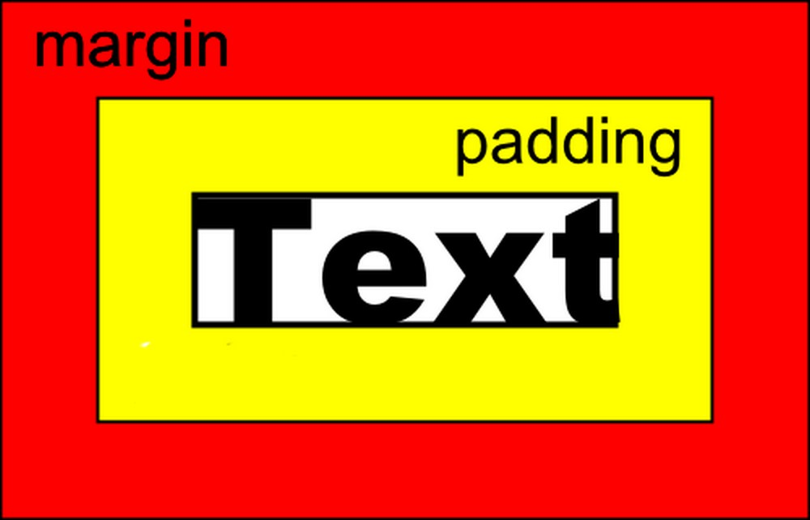

5.HAFTA
MARGIN PADDING
Margin dediğimiz şey “dış kenar boşluğudur”. Padding ise “iç kenar boşluğu” olarak tanımlanabilir. Mesela aşağıdaki Text metnini ele alalım. Bu bir resim, fotoğraf v.s’de olabilir. Text metninin dış kenar boşluğunu Margin iç kenar boşluğunu ise Padding‘i oluşturur.
p {
margin-top: 100px; /*Dışardan 100px aşağı doğru kayar*/
margin-bottom: 100px; /*Dışardan 100px yukarı doğru kayar*/
margin-right: 100px; /*Dışardan 100px sağa doğru kayar*/
margin-left: 100px; /*Dışardan 100px sola doğru kayar*/
}
p {
padding-right: 100px; /*İçerden 100px sağa doğru kayar*/
padding-top: 100px; /*İçerden 100px aşağı doğru kayar*/
padding-bottom: 100px; /*İçrden 100px yukarı doğru kayar*/
padding-left: 100px; /*İçerden 100px sola doğru kayar*/
}
TABLE ETİKETİ
table etiketi HTML tabloları tanımlar. table etiketi bir veya daha fazla th, tr ve td etiketlerinden oluşur. tr etiketi bir satır tanımlar, th etiketi tablo başlığı tanımlar, td etiketi ise tablo hücresi tanımlar. Daha kapsamlı tablolar için şu etiketlerde kullanılabilir: caption, col, colgroup, thead, tfood ve tbody
LAYERS
Katman layer, web tarayıcısı penceresinde istediğiniz bir konuma yerleştirebileceğiniz ve HTML içeriği için kullanılan dikdörtgen şeklinde bir taşıyıcı elemandır.
■Katman Oluşturmak
■Katmanları Adlandırmak
■Katmanları İç İçe Yerleştirmek ve Dışarıya Çıkarmak
■Katmanın Görünürlük Özelliğini Değiştirmek
■Show-HideLayersDavranışını Kullanmak
div ETİKETİ
Div etiketi de Layer etiketi gibidir ancak günümüzde div etiketinin kullanımı daha popülerdir.
■Katman Oluşturmak
■Katmanları Adlandırmak
■Katmanları İç İçe Yerleştirmek ve Dışarıya Çıkarmak
■Katmanın Görünürlük Özelliğini Değiştirmek
■Show-HideLayersDavranışını Kullanmak